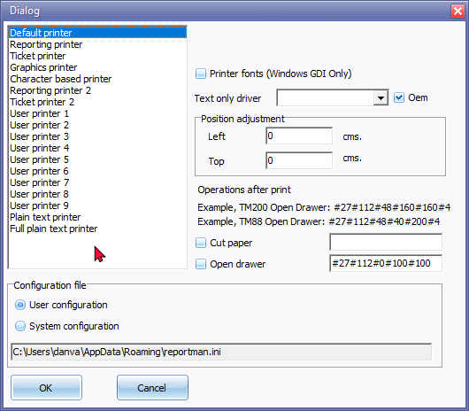

Printer
This option allows you to select the default printer (from any available printers set up / configured on your system).
To select the printer:
- On the Reports ribbon or the Setup ribbon, select Printer.
|
|
This "Dialog"-screen may also be launched from the following options:
|

- The "Dialog" screen is automatically displayed:

|
|
Configuration file options - Location:
|

On the "Dialog" window, you may: -
- Select one of the following printers; Default printer, Reporting printer, Reporting printer 2, Ticket printer, Ticket printer 2, Graphics printer, Character based printer, User printer 1 - 9, Plain text printer or Full plain text printer.
- Printer Fonts (Windows GDI Only) - The Microsoft Windows graphics device interface (GDI).
- Text driver only - You may select a print driver from the list (i.e. "PLAIN, EPSON, EPSON-MASTER, EPSON-ESCP, EPSON-ESCPQ, IBMPROPRINTER, EPSONTMU210, EPSONTMU210CUT, EPSONTM88II, EPSONTM88IICUT, HP-PCL, VT100" of "PLAINFULL".
|
|
Oem (Original Equipment Manufacturers) tick to use the drivers from the hardware manufacturers. |
- Position adjustment - Optional - You may enter a value for the left and top of the page.
- Operations after print -
- Cut paper -
- Open drawer -
- Configuration file - Printer configuration file - Report Manager Designer will use a Printer configuration file, only used in printer selection.
|
|
Configuration file options - Location:
|
|
|
This configuration file will be searched as Documents & Settings\Local Config\All Users\reporman.ini, if not found it will create or use Documents & Settings\Local Config\YourUserName\reporman.ini |